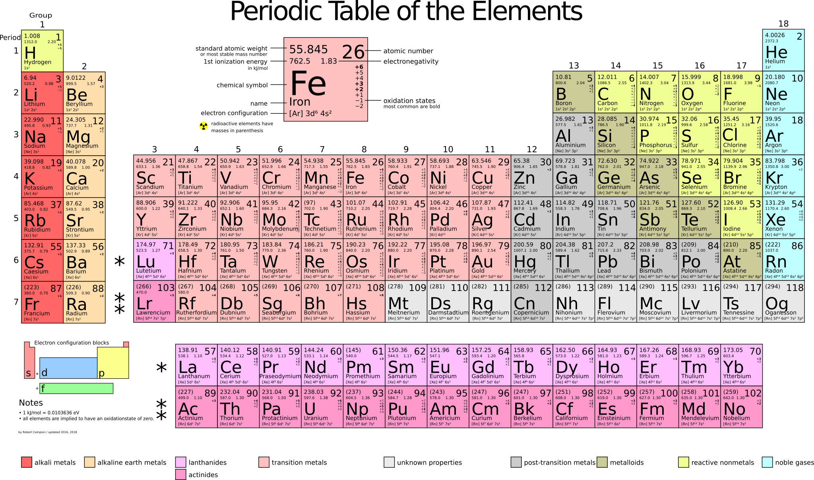
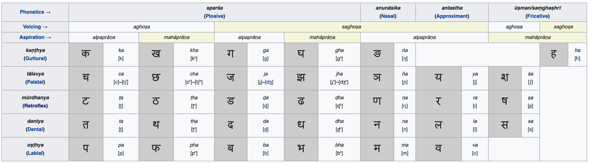

This post is a status update on the progress of the Beagle revision control system project. In the last two months, Beagle became 90% dogfooded, which is probably the key achievement. In also survived major changes in its inner workings.
The RDX-based CRDT storage engine was phased out in favor of git-compatible backend. The original choice was driven by the high cost of (re)building AST trees. Once Beagle switched from tree-sitter to ragel-based dogenizers, that problem went away. So, blob store is now good enough and git compatibility is definitely a huge huge win. Things implemented and now used daily are: clone from a git repo, push to a git repo, stage, commit, merge, diff and so on. All diffs and merges are syntax-aware. Tens of languages are supported.
Another story that unfolded in two months was the HTTP/URI command language.
The original idea was to refactor RCS command language around HTTP primitives:
verbs (get, post, put, delete, patch) and URIs.

GET extract data from repo into the working tree;POST advance a branch (fast-forward, rebase, or commit);PATCH merge other version into the working tree;PUT stage file/path for commit;DELETE stage file/path for deletion;The way verbs are defined, their work is strictly orthogonal. It is impossible to substitute one verb with creative use of another verb. At the same time, any required function can be achieved by a combination of commands.
In the same way we approach URIs. A standard RFC 3986 URI has five parts. Each part describes some aspect of the command. It is impossible to express the meaning of one part by creatively using another, but all the required functions can be expressed by some shape of an URI. So, each part is like a separate "dimension" x, y, or z:
1. scheme: the access protocol, also creatively reused for projections;
2. //authority (host), the remote host, sometimes e-mail;
3. /path/, naturally a repo-relative path;
4. ?query: the version formula (branch, hash, all the git tilde/dot spells);
5. #fragment is the message - some free form text used as a label or a
search term (e.g. setting commit message or picking a commit by a substring).
Overall, 5 URI fragments being defined/absent means 2**5=32 URI shapes, all
of them meaningful. If multiplied by 6 verbs, 32*6=192 command shapes. This
way, be drops CLI flags entirely. All the necessary semantics is achieved
by recombining the orthogonal primitives. For example,
be get ssh://host/path?branch makes fetch-and-checkout of a particular remote branch.
be post '?./fix#in progress' stashes the worktree changes into a
child branch fix (advances a new branch from 0 to the new commit)
be get ?.#indexes checks out a commit containing "indexes" in themessage, in the current branch' history
be patch ?./fix applies the stash back to the working treeURI syntax might be cryptic with special symbols at times, but most programming languages are. The good part, it is extremely familiar to people and LLMs alike and more predictable than historically-defined CLI flags one has always look up on SO/Claude/Google.

A major inspiration for this approach is the periodic table of elements, which was in turn inspired by Sanskrit sound table (above).